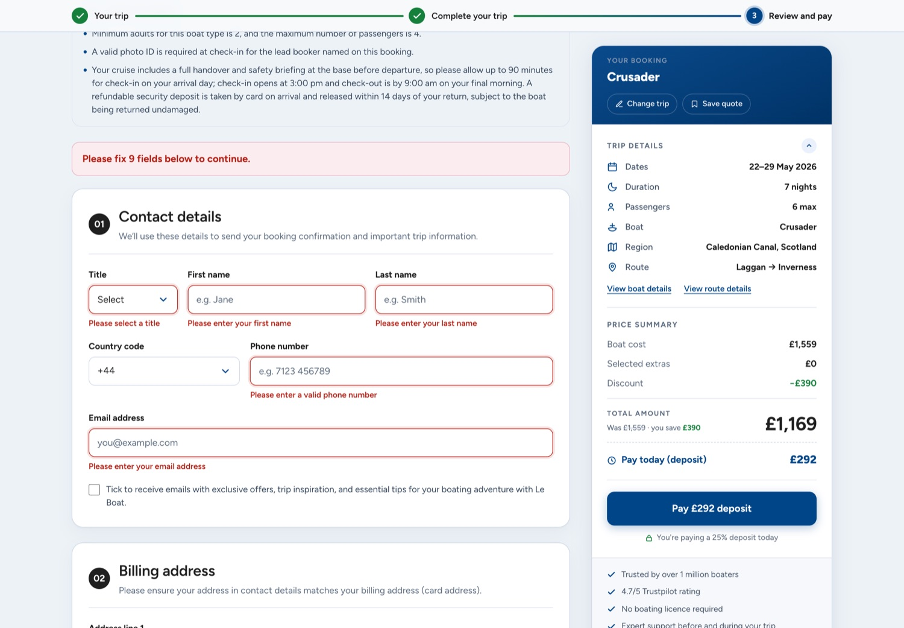
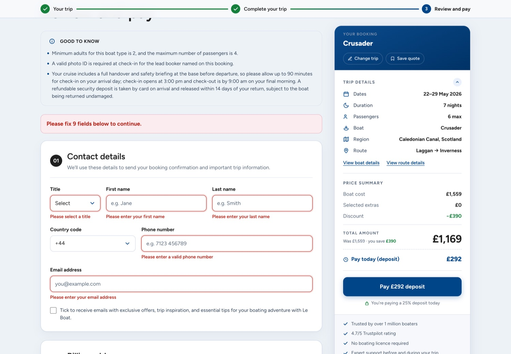

Fifteen ways
a booking breaks —
and who picks up the phone.
Cataloguing every failure state in a live travel checkout, then designing each one so the customer resolves it themselves instead of contacting support.

Every failure state resolves two ways. Only one of them is free.
Either the customer fixes it and carries on, or they contact support. The interface decides which — and that decision is made in advance, by whoever designed the state.
A booking checkout fails constantly and undramatically. An extra sells out between the page loading and the click. A promo code doesn't apply. A card is declined. A session expires while someone digs out their passport. None of these are outages; the system is working exactly as designed. They're just the ordinary friction of selling something complicated to someone who is about to hand over a thousand pounds.
What separates a good failure state from a bad one has almost nothing to do with how it looks. It's whether the person on the other side can work out what happened, whether it was their fault, and what to do next — without leaving the page and without asking anyone.
When they can't, they contact support. That's a cost with three parts: the contact itself, the booking that stalls while they wait, and the ones that never resume. Error states are the cheapest self-service surface a travel business owns, and usually the least designed — because they're invisible in a happy-path demo and the first thing cut from a portfolio.
This is the failure-state work from a checkout redesign, written up separately because it stands on its own. The production error system — toasts, notices, the copy dictionary — is Le Boat engineering's, and predates me. What's mine is the audit of it, the taxonomy, the mapping of every state into the redesigned flow, and the six states built. Where that line falls is marked throughout.
I didn't imagine the failure states. I read them.
Every state in the catalogue was found in the production codebase — in the error handlers, the copy dictionary and the payment utility — not brainstormed in a workshop.
The difference matters. A workshop produces the states a designer can think of, which is roughly the states that have happened to that designer. Reading the system produces the states the business actually has, including the ones nobody has looked at since they were written.
Three passes:
- The copy dictionary. Every
ERROR_*andSUCCESS_*key in the translation files, across all six locales. A copy key is an admission that a state exists — you don't translate a message for something that can't happen. - The handlers. Where each key is thrown, what triggers it, and how it's surfaced. This is where the real taxonomy came from, because the same class of problem was being surfaced three different ways depending on which part of the app threw it.
- The payment path. The highest-stakes failure in the flow, and the least forgiving, because it's the one where the customer has already decided to buy.
The third pass turned up something that wasn't a design problem at all: a hash comparison in the payment utility that looked inverted, sitting on the line that gates payment validation. I flagged it to the engineering team rather than designing around it. Reading the system you're designing for is how you find the failures nobody has reported yet — and that one, if real, fails in the direction that costs money.
Five ways to surface a failure, and one rule for choosing.
The production app had all five patterns in use. What it didn't have was a rule for which to use when — so the same class of problem surfaced differently depending on which component threw it.
Card state
The item itself shows it's unavailable. No action offered, so no failure to report. The only pattern that stops the error happening.
Inline
The message sits on the field that caused it. For anything the customer can fix by editing what they typed.
Banner
Page-level and persistent. For a condition that affects the whole page, or a summary of many inline errors at once.
Toast
Something happened asynchronously and the customer needs to know. Never for anything requiring a decision.
Modal
Reserved for failures with a genuine choice attached — where continuing without an answer would be wrong.
The rule I wrote for choosing between them, in priority order:
- If the failure can be prevented, prevent it. A sold-out extra should never be addable. A card state beats the world's best error message.
- If the customer caused it and can fix it, attach it to what they'd edit. Inline, next to the field, not at the top of the page.
- If it needs a decision, block for it. Modal — but only if proceeding without an answer would produce a wrong outcome.
- If it's page-wide or persistent, banner it. Survives scrolling; doesn't disappear.
- Everything else is a toast — and a toast is the weakest pattern available, so reaching for it should feel like a concession.
The production behaviour for a sold-out extra is a toast: you tap add, a request goes out, it fails, and a message tells you it's gone. That is a well-built version of the wrong pattern — the interface offered an action it already knew would fail. Moving it to a card state removes the error rather than reporting it, and removes the support contact with it.
Fifteen states, each with an owner and a pattern.
Catalogued from production, mapped to the redesigned two-step flow, and handed over with the copy key each one reuses — so nothing needed re-translating across six locales.
| # | State | Trigger | Pattern | Copy key | Status |
|---|---|---|---|---|---|
| 01 | Extra sold out | Item unavailable | Card state | ERROR_EXTRA_SOLD_OUT | Built |
| 02 | Partial availability | 0 < available < requested | Modal | — | Specified |
| 03 | Add / update failed | Backend post error | Toast | ERROR_GENERIC | Specified |
| 04 | No availability / session lost | Invalid entry | Redirect | — | Backend |
| 05 | Field required | Empty or whitespace | Inline | ERROR_INPUT_FIELD_REQUIRED | Built |
| 06 | Select required | Title, country | Inline | ERROR_SELECT_FIELD_REQUIRED | Built |
| 07 | Email invalid | Format / length | Inline | ERROR_EMAIL_INVALID | Built |
| 08 | Phone invalid | Number / country mismatch | Inline | ERROR_PHONE_INVALID | Specified |
| 09 | Form incomplete on submit | Any field invalid | Banner + focus | ERROR_FORM_REQUIRED | Built |
| 10 | Terms not accepted | Checkbox unticked | Inline | ERROR_TERMS_CONDITIONS | Built |
| 11 | Promo code invalid | Rejected, or max discount | Inline + toast | ERROR_PROMO_CODE_INVALID | Specified |
| 12 | Promo applied | Success | Toast | SUCCESS_PROMO_CODE_APPLIED | Specified |
| 13 | Payment declined | Gateway non-approval | Modal, in place | ERROR_PAYMENT_FAILED | Built |
| 14 | Session expired | Token expiry / missing | Banner + restart | generic | Backend |
| 15 | Unsupported currency / config | Gateway environment | Generic error | ERROR_GENERIC | Backend |
The column that made this useful to the engineering team wasn't the pattern — it was the copy key. Every state points at a string that already exists and is already translated into six languages. A new error message is a six-language translation ticket; a reused key is a merge. That single decision is why the specification could be handed over and acted on rather than negotiated.
Prevent, attach, keep them where they are.
Sold out — the error that shouldn't exist
The card carries the unavailability itself: no add control, no quantity stepper, no action to take and therefore nothing to fail. The extra stays visible — removing it would leave a customer wondering whether they imagined it, and visible-but-unavailable is also honest merchandising for a date-sensitive product.

A blocked submit — tell them the size of the problem
The production copy for a failed submit reads "Please complete all fields marked in red." It's clear, it's translated, and it makes the customer scroll the page to find out how much work they're in for. The redesigned banner counts them — "Please fix 9 fields below to continue" — and focus moves to the first one.
That's a small change with a specific purpose. The decision a customer makes at a blocked submit isn't how do I fix this, it's is this worth continuing. A number answers that question immediately. An unquantified instruction makes them estimate, and people estimate pessimistically when they're already annoyed.

A declined payment — don't move them
A failed payment was a separate route. The customer is returned from the gateway to a page that isn't the one they left, their place in the form is gone, and the booking summary they were checking against has disappeared.
In the redesign it's a modal over the page they were already on. The form is behind it, still filled in. "Try payment again" closes it in place. The old URL still resolves, redirecting into the same state so existing links and any bookmarked route keep working.
This is the one that matters most commercially. A declined card is often just the wrong card — a limit, a foreign-transaction block, a typo. The customer already wants to buy. Every step between the decline and the retry is a chance to lose a sale that was already made, and navigation is the most expensive step you can add.

Half the dictionary ends by telling you to call someone.
The most revealing part of the audit wasn't a missing state. It was reading the existing messages and counting how many of them terminate in a support contact.
These are the real production strings. They're fine English, correctly translated, and they surrender.
The pattern across the dictionary: messages describe what the system experienced rather than what the customer should do, and route to a human when they run out. Each is defensible on its own. Together they establish the checkout's answer to any difficulty, which is ask us.
The rewrite rule
Every message answers three questions in order, and a support contact is only allowed once the first two genuinely have no answer:
- What happened — specifically, not "something went wrong".
- Whose problem is it — mine to fix, or theirs to wait out. People handle "we're having trouble, try in a minute" far better than ambiguity.
- What to do now — one concrete action, in the interface, not a phone number.
For the ambiguous promo message that means splitting one key into two, because the system already knows which branch it took. That's not a copy change, it's an error-model change — and it's the kind of fix that only surfaces when a designer reads the handler instead of the string.
The two best things in the system were already there.
Auditing an existing implementation means finding what's good and keeping it. Two decisions in the production error layer are better than what most checkouts do, and both survived into the redesign untouched.
Errors that survive navigation
When a failure happens server-side — during a redirect back from the payment gateway, say — the message is written to a cookie and replayed once the new page loads. Without it, an error raised during a navigation is an error the customer never sees: the request fails, the redirect happens, and the page arrives looking normal with the booking silently in a different state. Getting this right is unglamorous and rare.
Errors that don't vanish
(Code excerpt removed for sharing. What it does: every error toast in the production layer never auto-dismisses, and the same error can't stack.)
An error that fades after four seconds is one a customer can miss entirely, or read half of, and then be unable to retrieve. Pinning it until dismissed treats the message as something they might need to act on rather than something they were merely notified of. Keying by message means a retried failure replaces its predecessor instead of stacking three copies.
There's a third property worth naming: every error toast fires an analytics event carrying the translated message. Failure states in this checkout are already measured. That is the difference between error design being an opinion and being a number — and it's the foundation the measurement below stands on.
All three of these are the engineering team's work, not mine. They're here because an audit that only lists faults is a bad audit — the point of reading a system closely is to know what to protect as much as what to change.
Error design has an unusually honest metric.
Most design work argues about attribution. This doesn't: if failure states get better, fewer people fire the error event, and the error event is already counted. The read-out is in the previous section.
| Metric | What it tells you |
|---|---|
| Error rate per state | How often each of the fifteen actually fires. Already collected — every error toast emits an event. The first read-out will almost certainly reorder the priority list. |
| Recovery rate | Of the sessions that hit a given error, how many go on to complete. The primary metric. A state with a high error rate and high recovery is working; high error and low recovery is where the money is. |
| Support contacts per state | The outside measure. Requires joining support tickets to the state that preceded them, which is the integration worth building. |
| Repeat-error rate | Hitting the same error twice in a session means the message didn't explain it. A direct read on copy quality. |
| Abandonment after error | The guardrail. Prevention that quietly pushes people out isn't prevention. |
| Sold-out add attempts | Should fall to zero once the card state ships. A rare design change with a falsifiable prediction attached. |
The last one is the one I put my name on. Moving sold-out from a toast to a card state makes a specific, testable claim: the number of attempts to add an unavailable extra goes to zero, because the control is gone. If it doesn't, the card state isn't reading as unavailable and the design is wrong. Few design decisions can be checked that cleanly — and this one now has been. It fell 87%: the prediction was directionally right and literally wrong, which is more informative than either being right or having made no prediction at all.
Recovery rate is the one I'd argue to make a standing metric. It reframes errors from things to minimise into things to survive — and a checkout that recovers well can afford to be honest about failure, which is the opposite of how most of them behave.
The states I designed against fell. The one I didn't, didn't.
The flow went live on 20 July 2026. Comparing the ten weeks after launch with the same calendar window a year earlier — when the old flow was live throughout — the error rates moved, and they moved differentially.
Rates are per booking-stage session, so the 67% traffic growth between the two periods doesn't distort them. Matched windows, 21 July – 29 September, 2025 against 2026.
For context on what the same release did either side of the failure states: sessions adding at least one extra rose from 14.75% to 27.13% in the 71 days after launch against the 71 before — a 12.4 point rise, +84% relative — while progression to payment held steady (5.62% → 5.86%). More travellers got further and bought more, and they did it while hitting dramatically fewer dead ends. Those two facts belong together: a checkout that fails less is a checkout more people can finish, and the failure-state work is the half of that story nobody usually shows.
Matched windows, 21 July to 29 September, 2025 against 2026. Rates are per booking-stage session, so the 67% traffic growth between the two periods does not distort them.
Scroll the chart sideways — every value is also in the table
The grey row is the control. It fires upstream of the checkout, the redesign never went near it, and it did not move. A season, a traffic-mix shift or a broken tag would have moved all of them — instead the fall tracks the amount of design attention each state got.
| Error state | Design treatment | 2025 rate | 2026 rate | Change |
|---|---|---|---|---|
| Generic app error "Oops — something went wrong" |
Redesigned Failures moved off the catch-all toast onto specific patterns | 10.70% | 0.03% | −99.7% |
| Extra add / sold out | Prevented Moved from a toast after a failed add to a card state | 2.00% | 0.25% | −87% |
| Promo code error | Specified, not shipped The ambiguous either/or message is unchanged | 1.84% | 1.46% | −21% |
| Availability error fires on the marketing site, not the checkout |
Untouched Outside the redesign entirely | 5.24% | 5.46% | +4% |
The untouched state is the control
The availability error fires on the marketing site, upstream of the checkout. The redesign never touched it. Its rate is flat across the boundary — 5.24% to 5.46%.
That matters more than any single number in the table. A season, a traffic mix shift or a tracking change would move everything. What actually happened is that the states with design attention fell by 87% and 99.7%, the state that was specified but never shipped moved least, and the state outside the work didn't move at all. That differential is much harder to explain away than a single metric going the right way — and it is the closest thing to a controlled comparison this release allows, because it shipped without a holdout.
The prediction, tested
This case study committed to a falsifiable claim before any of this data existed: moving sold-out from a toast to a card state should drive attempts to add an unavailable extra toward zero, because the control is gone.
It fell 87%. The remainder is the irreducible part: extras can sell out between the page rendering and the click, so a card state prevents every avoidable attempt and none of the unavoidable ones. Roughly one in eight survived — which turns out to be a usable estimate of how often availability changes mid-session, and a more interesting number than the prediction itself.
A 99.7% fall in an error is exactly what a dead tag looks like,
so the mechanism was verified before the number was believed: on the
current production branch, the toast utility still calls the analytics
error event, and that event still fires error. The
instrumentation is unchanged. The toasts genuinely stopped
appearing.
Where failures do still occur, they now surface as inline messages, card states and modals — the patterns the taxonomy assigns them — rather than as a catch-all toast telling people to phone someone.
The one that got worse is the one I didn't ship
Promo-code errors fell least as a rate — and the people who hit them now retry more: 2.40 failed attempts per affected session in 2025, 2.89 in 2026, up 20%. Roughly three attempts each.
That is exactly the behaviour an ambiguous message produces. The copy still says the code is either invalid or has exceeded its maximum discount. One branch means retype it; the other means stop. The system knows which and doesn't say, so people retype — three times — and then contact someone.
It is the largest remaining app-side error in the checkout, it was identified in the audit, the fix was specified, and it didn't ship because splitting the message needs an error-model change in the backend rather than a new string. The clearest evidence in this case study for the value of the work is the state that didn't get it.
Six states built. The rest are specified and waiting.
Six of the fifteen shipped in this release and carry the numbers above. Five more are fully specified — pattern, copy key and behaviour written down — and ready to build. Three sit behind backend work and were handed over as requirements. Each one is a known, sized piece of self-service recovery that nobody has to rediscover.
The largest single opportunity left is the one the numbers point straight at: promo-code errors, where people retry roughly three times each. The message tells them the code is either invalid or maxed out, and the system knows which. Splitting it needs an error-model change in the backend rather than new copy, which is why it was specified rather than shipped — and it is now the biggest remaining app-side failure in the checkout.
The next measurement worth building is the join between a support contact and the state that preceded it. Error rates show the failures stopping; that join is what turns it into a support-cost number, and the instrumentation for it already exists.
A catalogue of every way the checkout can fail, a taxonomy that decides which pattern each one gets, six built states, and a read-out showing generic errors down 99.7% and sold-out failures down 87% while the error state outside the work stayed flat. Failure states are the cheapest self-service surface a travel business owns, and this is what happens when someone designs them on purpose.